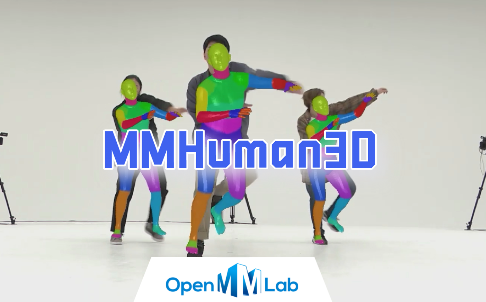
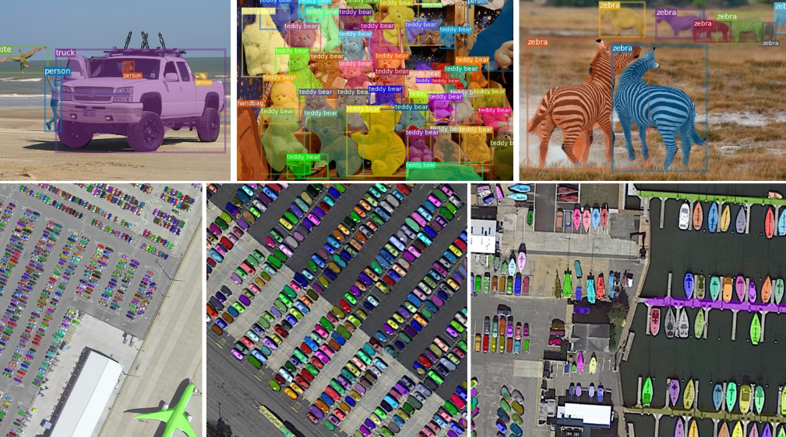
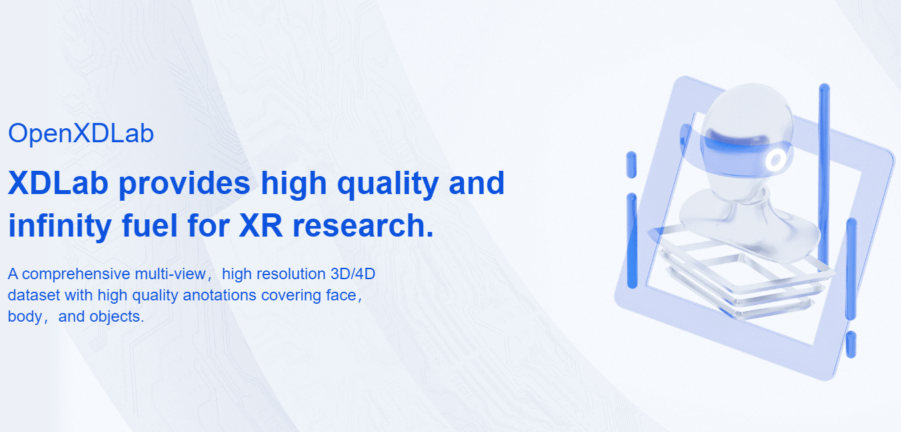
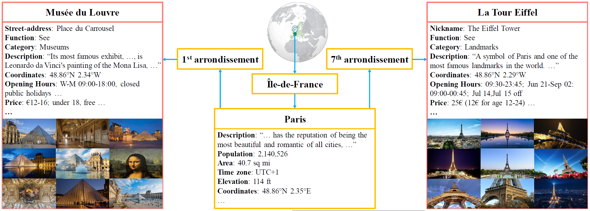
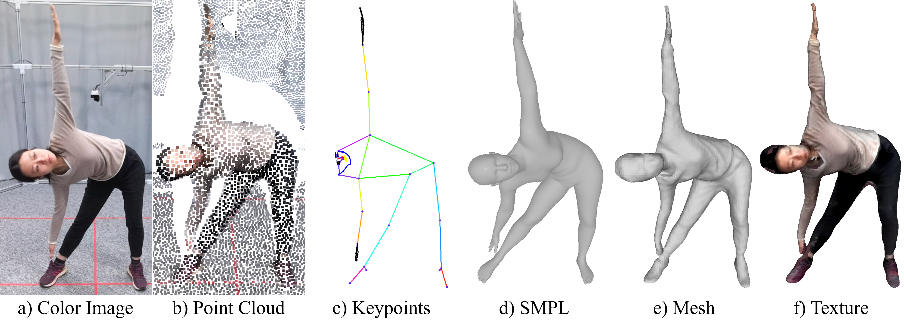
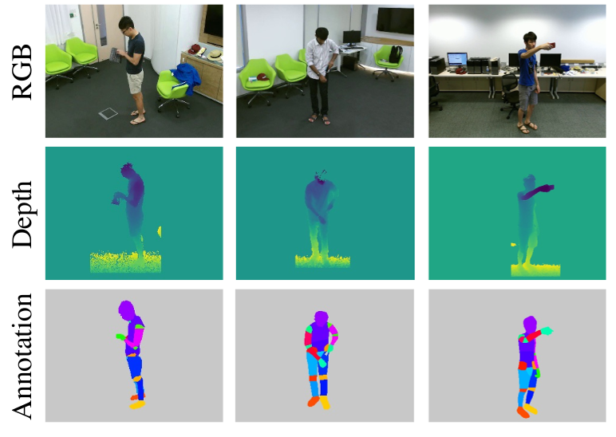
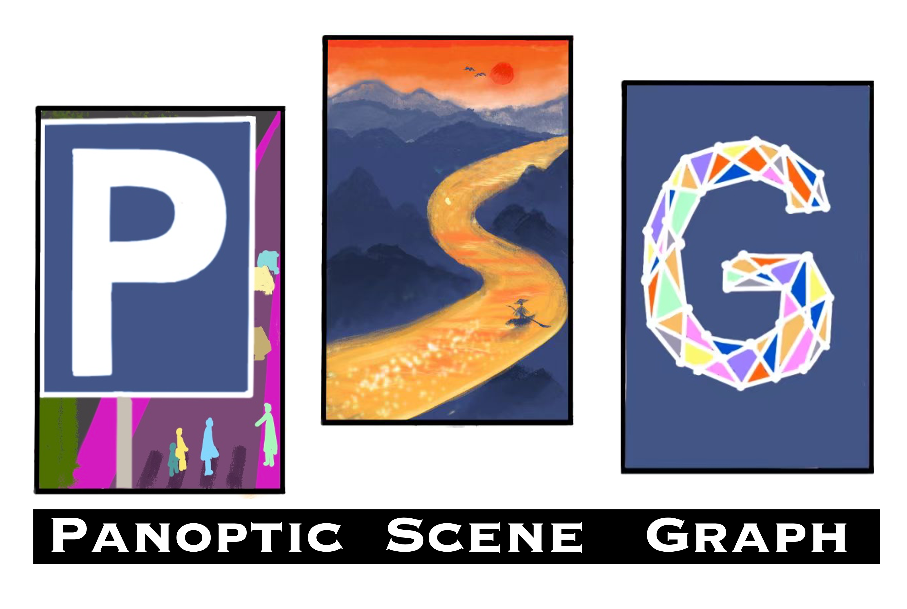
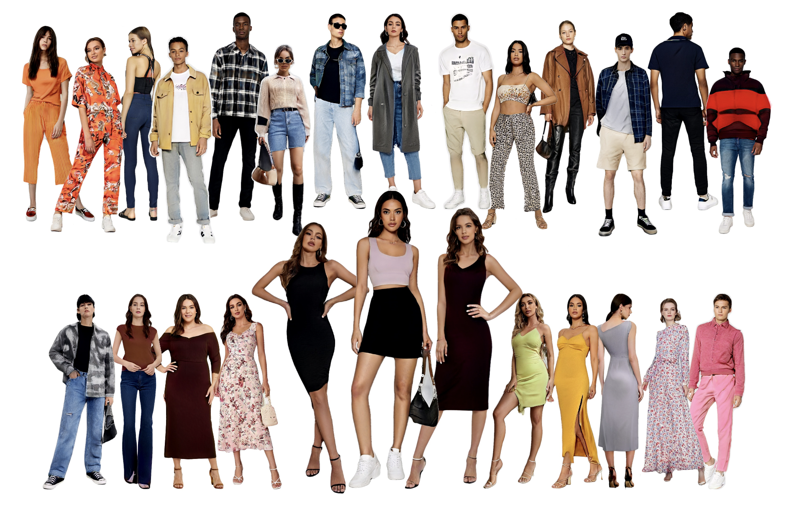

Home
·
Research
·
Publications
·
Softwares
·
Team
·
Services
·
Awards
Softwares
[GitHub]

MMFashion Codebase
MMHuman3D Codebase

MMDetection Codebase
MMSelfSup Codebase
StyleGAN-Human Codebase
OpenOOD Codebase

OpenXDLab Codebase
OpenXRLab Codebase
Datasets
CelebA Dataset
DeepFashion Database

Placepedia Dataset
ATD-12K Dataset
MVP Dataset
PointCloud-C Database
GTA-Human Dataset
ForgeryNet Dataset
Bamboo Dataset
SeqDeepFake Dataset


HuMMan Dataset
NTURGBD-Parsing-4K
DeepFashion-MultiModal Dataset
CelebA-Dialog Dataset

OmniBenchmark Dataset
PSG Dataset

SHHQ Dataset
CelebV-HQ Dataset